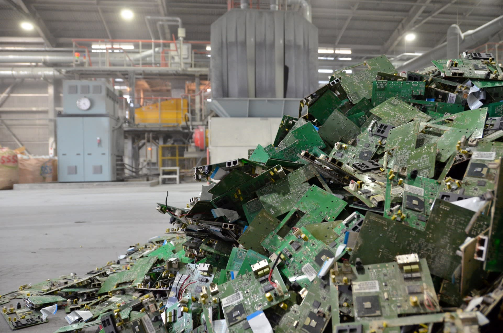

Guillaume Pitron, réputé pour son ouvrage incontournable sur les métaux rares, utilise une métaphore qui représente parfaitement la place des métaux rares au sein de tous les composants de la roche. Cette métaphore est celle des ingrédients pour faire du pain : la farine, l’eau, la levure et le sel. Pour lui, la roche est représentée par la farine car elle est présente en grande quantité dans la fabrication du pain. Ensuite, l’eau peut-être assimilée dans notre cas au fer qui est présent en abondance dans le sous-sol de la Terre. La levure, en nette plus petite quantité que la farine ou l’eau, représente ici les “sous-métaux” comme le nickel, plus rare que le fer. Et enfin, la pincée de sel si capitale pour que le pain ne soit pas fade, est incarnée par les métaux rares.
Les métaux rares sont en grande partie des éléments présents dans le tableau périodique des éléments. Comme leurs noms l'indiquent, ils se présentent sous la forme de métaux la plupart du temps. Leur nombre varie selon les critères que l’on prend en compte pour définir leur rareté : la quantité disponible dans la croûte terrestre, le niveau de demande de ces métaux, les usages qui en sont faits. Certains de ces métaux sont plus rares que d’autres.
Il est important ici de ne pas confondre les termes “métaux rares” et “terres rares”. L’appellation “métaux rares” englobe la sous-catégorie des “terres rares”. Ci-dessous, voici le tableau périodique des éléments : les éléments encadrés en rouge sont des métaux rares. Il manque cependant le graphite naturel, le charbon à coke, le borate (alliage de bore et d’oxygène) et le baryte (sulfate de baryum) qui sont composés de plusieurs éléments. Les éléments encadrés en jaune sont les terres rares. Cette liste n’est pas exhaustive.
Les métaux rares ont la particularité d’avoir des propriétés magnétiques importantes. Au début des années 1970, le néodyme et le samarium par exemple ont été utilisés pour fabriquer les aimants des moteurs électriques. Aujourd’hui, les métaux rares sont omniprésents dans nos vies, dans nos téléphones et ordinateurs bien sûr, dans nos voitures (même avec des moteurs thermiques), dans les téléviseurs, les satellites, les panneaux photovoltaïques et aussi dans tous les objets électroniques contenant un circuit intégré. Voici un exemple ci-dessous de tous les métaux rares que peuvent contenir une voiture électrique et un iPhone.
Voici quelques ordres de grandeur de quantité de métaux rares : un disque dur d’ordinateur peut contenir environ 4,5 grammes de terres rares, un moteur de voiture électrique a besoin de 1,2 à 3,5 kg et une éolienne par exemple peut en utiliser jusqu’à une tonne ! Sans aucune caricature, on comprend que nos objets du quotidien sont littéralement composés de tous les métaux rares de la terre. Cela impose le fait de trouver ces métaux rares et donc de produire soi-même ou alors d’acheter.
Le marché des métaux rares divise le monde en deux camps : ceux qui produisent et ceux qui achètent. La loi de l’offre et de la demande s’applique de façon plus ou moins stricte. En effet, peu de pays ont la capacité de jouer le rôle de l’offreur et du demandeur. Mais il y a toujours une exception à la règle : la Chine.
Les lieux d’extraction des métaux rares sont divers et ont évolué au fil des décennies. On pense souvent que les métaux rares sont localisés seulement sur certaines parties du globe, mais en réalité ils sont partout dans la croûte terrestre. Seulement, certains espaces sont plus moins disposés à leur extraction et révèlent ainsi l'hétérogénéité de la répartition de cette ressource.
Aujourd’hui le principal producteur mondial est la Chine qui représente près de 95% de la production mondiale mais cela n’a pas toujours été le cas. Autrefois les États-Unis représentaient une grande part de ce marché, avec de grands emblèmes comme l’ancienne mine de Mountain Pass que nous étudierons par la suite. Le monopole chinois est de nos jours absolument indéniable puisqu’il représente à lui seul la quasi-totalité de ce marché spécialisé.
La carte des principaux pays producteurs reflète très bien ces différents propos, par la liste de métaux qu’elle extrait la Chine affirme encore une fois sa position dominante sur ce marché. L’Afrique du Sud est aussi un pays fortement représenté par sa production en métaux rares et est par conséquent le leader du continent africain accompagné par la République Démocratique du Congo ainsi que le Rwanda. La carte a été faite grâce à un tableau de données de la Commission Européenne à propos des matières critiques. La quasi-totalité des métaux rares y sont détaillés avec les principaux producteurs et importateurs, ainsi que des informations sur la dépendance de l’Union Européenne et le taux de recyclage de ces matières.
Sur le continent américain seuls deux pays sont présents sur ce marché de nos jours, il s‘agit des Etats-Unis et du Brésil. En Europe, la France est le seul pays extracteur de métaux rares, en particulier le Hafnium où la Russie pourrait entrer en concurrence. Le cas de la France sera étudié plus tard en détail car il est, avec celui des États-Unis, un exemple de l’arrêt de la production de métaux rares dans les années 1990. À l’interface entre l’Europe et l’Asie on retrouve la Turquie, pays extracteur de Borate essentiellement. La Russie a un rôle primordial dans l’extraction du palladium, qui se retrouve dans les catalyseurs des pots d’échappement de voiture afin de réduire les émissions de GES.
Sur la première animation ci-dessous, il est possible de mettre en valeur un pays et de faire défiler les années afin de voir leur évolution en termes d’exportations et d’importations de métaux rares. Ici, les données proviennent de l’Observatoire de la Complexité Économique (OEC) et sont exprimées en dollar. Globalement, le nombre d’acteurs sur le marché, que ce soient les exportateurs ou les importateurs, augmente depuis 1995. Ensuite, le graphique fait référence à des valeurs en dollars d’échanges et non de quantité de marchandises mises sur le marché. Cela implique le fait que certains métaux valent plus chers que d’autres et inversement. Ainsi cette animation ne veut pas forcément dire que la Chine exporte le plus, mais plutôt que ce qu’elle exporte a une valeur importante. Même si, comme nous l’avons dit plus tôt, elle exporte, de fait, une écrasante majorité des métaux rares sur le marché.
Le besoin en métaux rares est grandissant depuis les années 1960 et plus particulièrement depuis la fin des années 1990 avec l’apparition dans un premier temps des batteries puis la massification de l’usage de ces métaux dans les nouvelles technologies et leur démocratisation.
L’empire du milieu, en 1985, assouplit sa taxation sur les produits issus des terres rares et récupère alors une grande partie du marché : c’est le début de l'ère chinoise. Le graphique de la revue Minerals montrant l’évolution de la demande et de la production en métaux rares depuis le début du XXème siècle expose aussi l’influence de chacune des crises économiques en faveur ou en défaveur de ce marché. Au fil des années, la demande a toujours suivi l’offre mais ceci en léger décalé de quelques années. Toutefois c’est seulement lors des crises que ces deux courbes se rencontrent.
Pour la majorité des continents, la production de minerais de 1984 à nos jours est restée en plateau légèrement montant excepté pour l'Asie qui depuis le début des années 2000 est en hausse constante. La production africaine, quant à elle, n’a pratiquement pas évolué et celle de l’Europe semble avoir légèrement diminué. Celle de l’Océanie paraît en légère augmentation depuis la fin des années 2010. Les données chiffrées ne nous permettent pas de remonter plus loin que les années 1980. Certaines études portent tout au plus jusqu’au début du XXème siècle.
Dans la deuxième animation ci-dessous, nous avons pris comme référence les principaux pays producteurs de métaux rares afin de rentrer plus en détail dans l’analyse de l’évolution des importations et exportations depuis 1995. Pour les exportations, nous n’avons pas besoin de dire que la Chine domine cette partie du marché avec notamment un bon en 2010 où les exportations ont largement triplé. La France est en deuxième position et exporte entre 60 et 80 millions de dollars. Suivent les États-Unis qui subissent une baisse de leurs exportations jusqu’en 2005 pour augmenter jusqu’à nos jours et dépasser la France. La Russie quant à elle ne représente que très peu : pas plus de 30 millions de dollars. Et enfin le reste des principaux pays ne représente que très peu des exportations.
Cependant l’histoire des métaux rares a bien commencé quelque part. En effet, c’est à un militaire amateur de minéralogie suédois que l’on attribue la découverte de la première “terre rare” : l’Yttrium à la fin du XVIIIème siècle. Au début du siècle suivant, le Cérium est découvert en Allemagne et les techniques de raffinage se développent notamment en France dans les grands laboratoires de chimie. Pour l’Exposition Universelle de Paris en 1900, les terres rares avaient pratiquement toutes été découvertes, certaines plus ou moins isolées et en réalité peu étaient vraiment dans leur état pur. Ce n’est seulement que quelques années plus tard que la plupart des terres rares ont pu être obtenues à l’état pur.
Pour les importations, les évolutions sont plus contrastées. Jusqu’en 2015, ce sont les États-Unis qui importent et cela révèle leur domination sur les marchés de la production d’automobile, de l’électronique, etc. Après 2015 cependant, la Chine dépasse largement les États-Unis avec des importations en augmentation exponentielle. En effet de 2000 à 2010, on aperçoit nettement la montée en puissance de l’empire du milieu qui commence à dépasser des pays comme la France. Ce n’est qu’à partir de 2010 qu’il prend son envol, accueillant en même temps des dizaines d’entreprises en recherche de main d'œuvre moins chère. Un pays étonne par sa propension à importer : c’est la Thaïlande. On peut dire en conclusion que les importations sont mieux réparties parmi les pays que les exportations.
L'augmentation de l’exploitation depuis plusieurs décennies amène une nouvelle problématique quant à la production de métaux rares, c'est celle du recyclage et du réemploi de ces derniers. En effet, face à une demande croissante et une quantité de ressources extractables finies, la filière du recyclage et du réemploi est en plein essor. L’Europe est le seul continent à recycler une part assez haute de ses déchets contenant ces métaux, avec 42% contre environ 10% pour l’ensemble des autres continents. Selon la convention de Bâle, les États qui l’ont signée doivent recycler leurs déchets électroniques dans les pays où ils sont collectés. Cela implique pour les entreprises multinationales d’avoir de quoi recycler dans tous les pays dans lesquels elles sont implantées, dans lesquels elles vendent. Il est évident que peu de firmes respectent cette convention. Les États-Unis ne l’ont pas signée. Ainsi environ “80% des déchets électroniques produits aux USA sont expédiés vers l’Asie” (Guillaume Pitron). Le Japon et l’Europe utilisent une manière détournée pour ne pas avoir à recycler ces déchets : ils les exportent en Chine sous la bannière “occasion” ou “aide humanitaire”... La Chine est en effet reconnue pour sa main d'œuvre peu chère ce qui rend le recyclage jusqu’à dix fois moins cher que dans les pays développés.
Une des solutions principales à cette ressource finie semble être la recherche de produits de substitution aux métaux rares, ces méthodes de remplacement permettraient aux industriels de s’affranchir des coûts devenus élevés des métaux rares aujourd’hui. À ce jour, seuls les pays les plus développés peuvent se permettre de miser sur la recherche et le développement de produits de substitution.
Les métaux rares prennent aujourd’hui une place importante dans notre société car ils sont les garants d’un monde plus “vert”, moins producteur de gaz à effet de serre; sans oublier pour autant que l’extraction et le raffinage de ces métaux représente près d’un dixième des émissions de GES mondiales.
created with
HTML Builder .